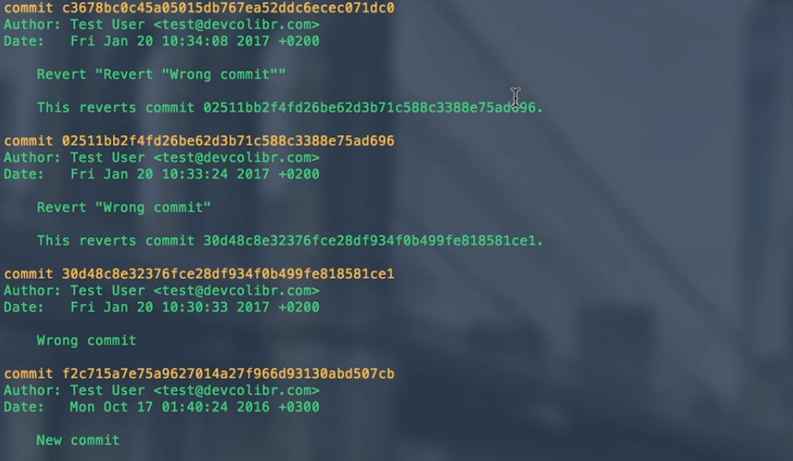

Из статьи вы узнаете, как правильно отменить последний Git-коммит. Приведена не только теория, но также необходимые команды.
Работая с системой управления версиями Git, вы рано или поздно столкнетесь с распространенной проблемой: случайный коммит ненужных критических изменений. Неплохо, если это только ваш проект, но если речь идет о чем-то более масштабном, предназначенном для целой команды разработчиков, такие ситуации оказываются очень неприятными. Разберемся, как это исправить.
Удалите Git-коммит новым коммитом
Звучит как нонсенс, но только на первый взгляд. Суть в том, что выполняется пустой коммит, который удаляет нежелательные изменения после предыдущего.
Выполните:
Команда revert означает возврат состояния к HEAD – последнему коммиту в ветке.
Появится следующее сообщение:

Если открытие редактора не нужно, к исходной команде добавляется --no-edit. Смотрим, как это работает:
Чтобы удостовериться, что все сделано правильно, выполняется:
Предыдущий неправильный коммит будет присутствовать в логах, но также вы увидите его удаление:

Проверьте Git-статус следующей командой:
Если нужно откатиться к конкретному коммиту, вместо HEAD вписывается
его хеш или тег (можно посмотреть в логах/истории). Иногда такая отмена
невозможна из-за конфликтов, то есть произошли изменения, которые Git не
может отменить. Увидеть конфликтный файл для дальнейшего решения
проблемы поможет git status.
Используйте команду reset
Как видите, revert оставляет «следы» в истории ветки, а иногда нужно подобную ошибку скрыть. К возможностям reset относятся:
- Переписывание текущей ветки, которая будет указывать на необходимый коммит.
- Сброс буферной зоны (опционально).
- Сброс рабочего каталога (опционально).
Для начала отметьте нужную ветку:
Теперь выполните сброс до коммита oops:
Посмотрите историю:
Однако все равно ничто не теряется. Запустите команду отображения всех коммитов:
Вы увидите, что ошибочные коммиты все еще на месте, просто удалены из
нашей ветки. Опасность данного отката состоит в том, что в случае
командной работы такой сброс может сбить с толку других разработчиков,
поэтому настоятельно рекомендуется использовать revert.